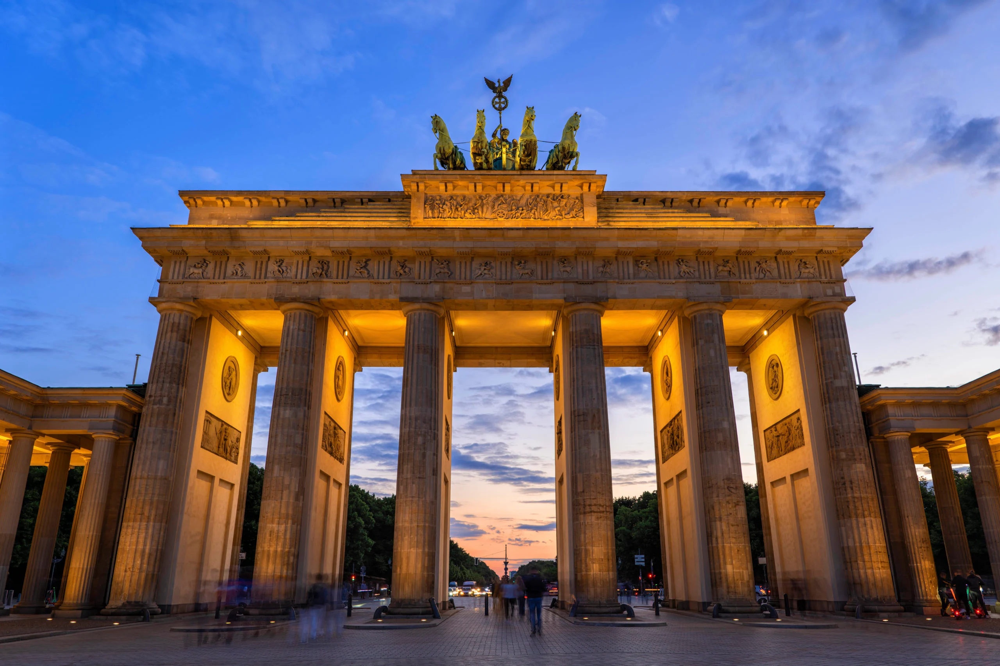
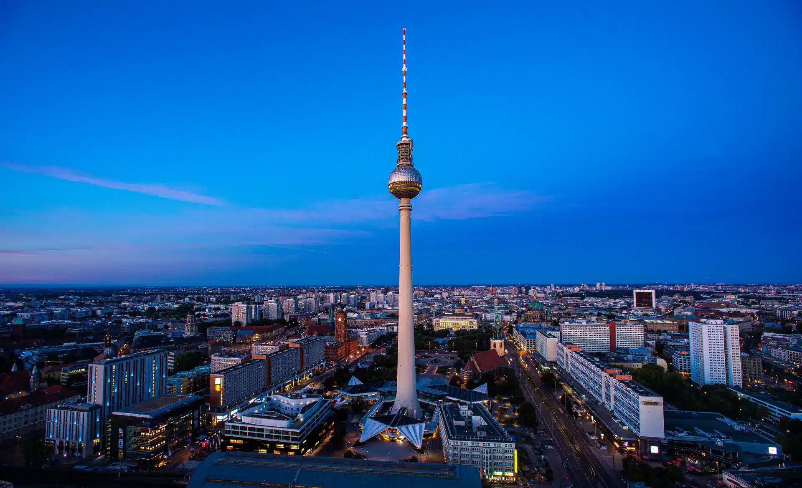

Sehenswürdigkeiten
Deutscher Dom

Der Deutsche Dom am Gendarmenmarkt im Berliner Ortsteil Mitte ist ein Kuppelturm, der in den Jahren 1780–1785 an die Neue oder Deutsche Kirche angebaut wurde. Er wurde im Auftrag Friedrichs II. von Carl von Gontard im Stil des Barock errichtet und liegt gegenüber dem Französischen Dom sowie an der Nordseite der Mohrenstraße. Nach Beschädigung im Zweiten Weltkrieg wurde das Baudenkmal 1983–1996 außen originalgetreu und innen modern wiederaufgebaut. Seit 2002 beheimatet der Deutsche Dom die Parlamentshistorische Ausstellung des Deutschen Bundestags.
Sony Center

Das Sony Center (seit März 2023 offiziell Center am Potsdamer Platz) ist ein Bauensemble am Potsdamer Platz im Berliner Ortsteil Tiergarten des Bezirks Mitte, das von dem Architekten Helmut Jahn gestaltet wurde. In einem der futuristischen sieben Gebäude – gegenüber der Philharmonie am Kemperplatz gelegen – befand sich ursprünglich die Europazentrale von Sony. Jetzt hat die deutsche Zweigniederlassung dort ihren Sitz. Der Gebäudekomplex galt zum Zeitpunkt seiner Erstellung als äußerst innovativ, so wurde z. B. eine schräge Glasfassade von Werner Sobek realisiert, die damals weltweit einmalig war.
Brandenburger Tor
Das Brandenburger Tor in Berlin ist ein frühklassizistisches Triumphtor, das an der Westflanke des quadratischen Pariser Platzes im Berliner Ortsteil Mitte steht. Es wurde als Abschluss der zentralen Prachtstraße der Dorotheenstadt, des Boulevards Unter den Linden, in den Jahren von 1789 bis 1793 auf Anweisung des preußischen Königs Friedrich Wilhelm II. nach Entwürfen von Carl Gotthard Langhans errichtet. Die das Tor krönende Skulptur der Quadriga ist ein Werk nach dem Entwurf des Bildhauers Johann Gottfried Schadow. Westlich des Brandenburger Tores befinden sich die ausgedehnten Grünflächen des Großen Tiergartens, die in gradliniger Verlängerung der Straße Unter den Linden von der Straße des 17. Juni durchquert werden. Die Platzfläche unmittelbar westlich des Tores trägt den Namen Platz des 18. März. Das Tor ist das einzig erhaltene von zuletzt 18 Berliner Stadttoren.[3] In der Formensprache stellt es die Hinwendung vom römischen zum griechischen Vorbild dar. Es ist eines der ersten klassizistischen Bauwerke in Preußen und markiert hiermit den Beginn des Klassizismus als staatstragende Architektur in Preußen. Das Tor ist das bekannteste Berliner Wahrzeichen und ein deutsches Nationalsymbol, mit dem viele wichtige geschichtliche Ereignisse des 19. und 20. Jahrhunderts verbunden sind. So wurde bis zum Zweiten Weltkrieg vor allem das Ende der napoleonischen Herrschaft 1813–1815 mit dem Bauwerk verbunden. Bis zur Öffnung des Eisernen Vorhangs stand es unmittelbar an der Grenze zwischen Ost- und West-Berlin und symbolisierte so während des Kalten Krieges das Aufeinandertreffen von Warschauer Pakt und NATO an der weltpolitisch heikelsten Stelle ihres gemeinsamen Grenzverlaufes. Entsprechend wird das Brandenburger Tor seit 1990 auch als Symbol der Überwindung der Teilung Deutschlands und Europas angesehen. Nach starker Kriegsbeschädigung wurde das Tor bis 1958 wiederhergestellt. Eine umfassende, knapp zweijährige Sanierung fand bis 2002 durch die Stiftung Denkmalschutz Berlin statt.
Berliner Fernsehturm
Der Berliner Fernsehturm ist mit 368 Metern das höchste Bauwerk Deutschlands sowie der fünfthöchste Fernsehturm Europas. Der Fernsehturm befindet sich im Park am Fernsehturm im Berliner Ortsteil Mitte. Er war im Jahr der Fertigstellung 1969 der zweithöchste Fernsehturm der Welt und zählt mit über einer Million Besuchern jährlich zu den zehn beliebtesten Sehenswürdigkeiten in Deutschland. Der Fernsehturm im Internationalen Stil wurde 1965–1969 von der Deutschen Post der DDR im Park am Fernsehturm anstelle des abgerissenen Marienviertels errichtet. Am 3. Oktober 1969 erfolgte die Eröffnung. Das Bauwerk ist über 220 Meter höher als der alte Berliner Funkturm aus den 1920er Jahren im Westteil der Stadt. Als Wahrzeichen und weithin sichtbare Landmarke prägt es die Skyline der Stadt. In Eröffnungsszenen von Filmen mit Bezug zu Berlin wird die Hauptstadt neben Bauwerken wie dem Brandenburger Tor, der Siegessäule und dem Reichstagsgebäude häufig durch den Fernsehturm symbolisiert. Das intern als „Fernmeldeturm 32“ bezeichnete Bauwerk dient neben seiner Hauptfunktion als Standort mehrerer Rundfunksender für Hörfunk und Fernsehen als Aussichtsturm mit einer Aussichtsetage inklusive Bar auf 203 Metern Höhe und beinhaltet ein Drehrestaurant. Darüber hinaus dient der Berliner Fernsehturm als Veranstaltungsort. Das markante und stadtprägende Bauwerk unterlag einer starken symbolischen Wandlung. Von einem politisch vereinnahmten nationalen Symbol der DDR entwickelte es sich nach der deutschen Wiedervereinigung zum gesamtstädtischen Symbol im wiedervereinten Berlin. Aufgrund seiner universellen und zeitlosen Formensprache fand es zunehmend als Markenzeichen Verwendung und wird international mit Berlin und Deutschland identifiziert. Der Berliner Fernsehturm erhielt 1979 in der DDR den Denkmalstatus, der nach der deutschen Wiedervereinigung fortgeschrieben wurde.